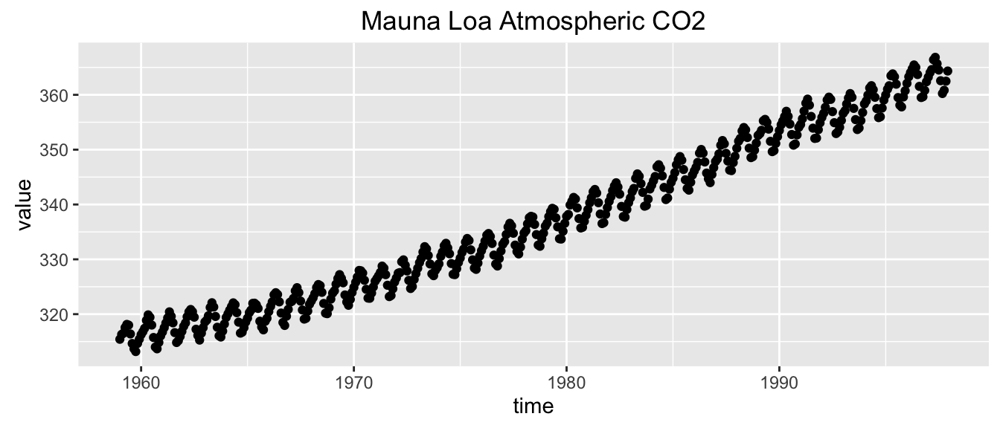
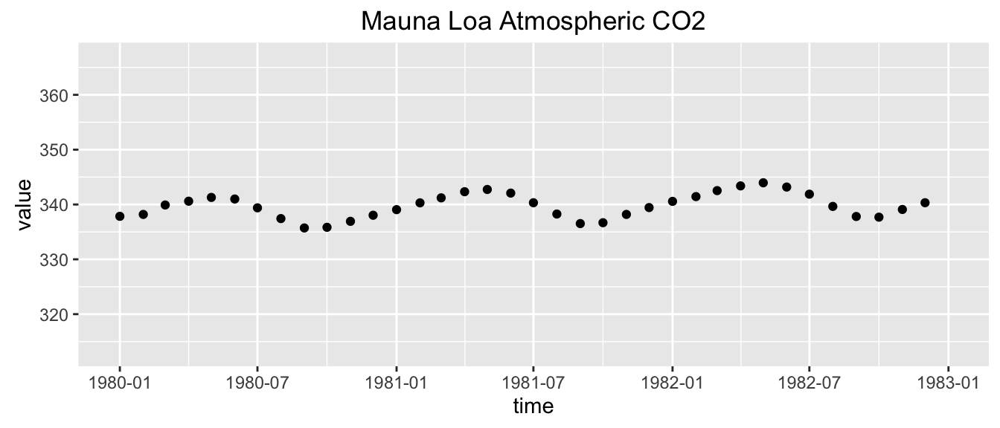
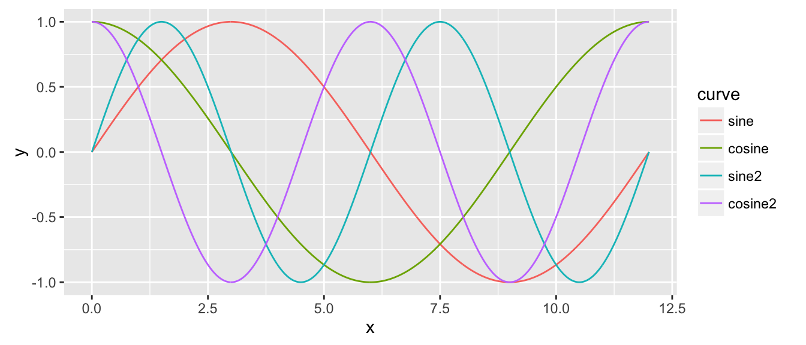

Chapter 13 A Brief Introduction to Time Series
# Usual library loading stuff
library(multcomp); library(multcompView)
library(lsmeans)
library(MASS)
library(faraway)
library(ggplot2)
library(dplyr)
library(lubridate)13.1 Trend + Seasonality
Often we just want a way to model trends on two (or more) time scales.
Consider the CO2 data from
data(co2)
CO2 <- data.frame(
value = as.vector(co2),
year = rep(1959:1997, each=12),
month = rep(1:12, times=39))
CO2 <- CO2 %>%
mutate( time = ymd(paste(year, month, 1)) )
ggplot(CO2, aes(x=time, y=value)) +
geom_point() +
ggtitle('Mauna Loa Atmospheric CO2')
# Zoom in on a couple of years
ggplot(CO2, aes(x=time, y=value)) +
geom_point() +
ggtitle('Mauna Loa Atmospheric CO2') +
scale_x_datetime(limits=ymd('1980-1-1', '1982-12-31'))## Warning: Removed 432 rows containing missing values (geom_point).
So how do we fit the seasonal trend?
We want a curve that looks something like a combination of these:
x <- seq(0, 2*pi, by=.01)
foo <- rbind(
data.frame(curve='sine', x=x) %>% mutate(y=sin(x)),
data.frame(curve='cosine', x=x) %>% mutate(y=cos(x)))
ggplot(foo, aes(x=x, y=y, color=curve)) +
geom_line()
But I also want to be able to have the curve span across the months, not just from 0 to \(2*\pi=6.28\)
So lets add a term for the fact that we want these to run from 0 to 12.
w <- 12
x <- seq(0, w, by=.01);
foo <- rbind(
data.frame(curve='sine', x=x) %>% mutate(y=sin(2*pi*x/w)),
data.frame(curve='cosine', x=x) %>% mutate(y=cos(2*pi*x/w)))
ggplot(foo, aes(x=x, y=y, color=curve)) +
geom_line()
So we think that \[\cos\left(2\pi* \frac{x}{\omega}\right)\] and \[\sin\left(2\pi * \frac{x}{\omega}\right)\] would be a useful set of functions for modeling this seasonal trend.
But these functions are just transformations of \(x\) just as \(x^2\) and \(x^3\) were. So lets just do another transformation.
model <- lm( value ~ year +
sin(2*pi*month/12) +
cos(2*pi*month/12),
data=CO2)
CO2 <- CO2 %>%
mutate( fit = predict(model) )ggplot(CO2, aes(x=time, y=value)) +
geom_point() +
ggtitle('Mauna Loa Atmospheric CO2') +
#scale_x_datetime(limits=ymd('1980-1-1', '1982-12-31')) +
geom_line(aes(y=fit), color='red')
This isn’t too bad, but the long term trend is off. Lets add a squared term onto the year.
model <- lm( value ~ poly(year, 2) +
sin(2*pi*month/12) +
cos(2*pi*month/12),
data=CO2)
CO2 <- CO2 %>%
mutate( fit = predict(model) )ggplot(CO2, aes(x=time, y=value)) +
geom_point() +
ggtitle('Mauna Loa Atmospheric CO2') +
#scale_x_datetime(limits=ymd('1980-1-1', '1982-12-31')) +
geom_line(aes(y=fit), color='red')
That fits the long term trend better, now lets zoom in on just a couple of years:
ggplot(CO2, aes(x=time, y=value)) +
geom_point() +
ggtitle('Mauna Loa Atmospheric CO2') +
scale_x_datetime(limits=ymd('1980-1-1', '1982-12-31')) +
geom_line(aes(y=fit), color='red')## Warning: Removed 432 rows containing missing values (geom_point).## Warning: Removed 432 rows containing missing values (geom_path).
We are missing the troughs a bit. Almost like my model isn’t quite flexible enough. So just as we added more powers for the polynomials \(x^3, x^4, \dots\) we can add flexibility to these by adding higher frequency sine and cosine curves.
w <- 12
x <- seq(0, w, by=.01);
foo <- rbind(
data.frame(curve= 'sine' , x=x) %>% mutate(y=sin(2*pi*x/w)),
data.frame(curve='cosine' , x=x) %>% mutate(y=cos(2*pi*x/w)),
data.frame(curve= 'sine2', x=x) %>% mutate(y=sin(2*pi*x/w*2)),
data.frame(curve='cosine2', x=x) %>% mutate(y=cos(2*pi*x/w*2))
)
ggplot(foo, aes(x=x, y=y, color=curve)) +
geom_line()
Now we fit a model with a with a polynomial that describes the long-term trends and a bunch of functions of sine and cosine that models the with-in year seasonality.
model <- lm( value ~ poly(year,2) +
sin(2*pi*month/12) +
cos(2*pi*month/12) +
sin(2*pi*month/12 * 2) +
cos(2*pi*month/12 * 2),
data=CO2)
CO2 <- CO2 %>%
mutate( fit = predict(model) )# Zoom in on a couple of years
ggplot(CO2, aes(x=time, y=value)) +
geom_point() +
ggtitle('Mauna Loa Atmospheric CO2') +
scale_x_datetime(limits=ymd('1980-1-1', '1982-12-31')) +
geom_line(aes(y=fit), color='red')## Warning: Removed 432 rows containing missing values (geom_point).## Warning: Removed 432 rows containing missing values (geom_path).
The sine and cosine bits are part of something that generalizes curve fitting to allow very flexible types of curves. For time-series the sine and cosine family of basis functions is quite handy but require a bunch of technical fiddling to just use as we have done here.
Most of the packages that we might use while doing time-series analysis will allow you just specify to fit a smooth curve to the Months.
library(mgcv)## Warning: package 'mgcv' was built under R version 3.2.4## Loading required package: nlme## Warning: package 'nlme' was built under R version 3.2.4##
## Attaching package: 'nlme'## The following object is masked from 'package:lme4':
##
## lmList## The following object is masked from 'package:dplyr':
##
## collapse## This is mgcv 1.8-12. For overview type 'help("mgcv-package")'.# I am cheating a bit because I'm using a different
# set of basis functions. See STA 578 for more info...
model <- gam(value ~ s(year) + s(month, bs='cc'), data=CO2)
CO2 <- CO2 %>%
mutate( fit = predict(model) )
ggplot(CO2, aes(x=time, y=value)) +
geom_point() +
ggtitle('Mauna Loa Atmospheric CO2') +
geom_line(aes(y=fit), color='red')